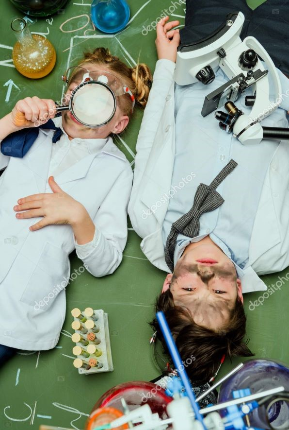

For kids
Are you a young person looking to learn more about science? Come on
down to our museum, there’s plenty to see and do. You can learn
about Newtonian physics from our bumper swing, or why not travel
back in time and meet our resident Woolly Mammoth? Our exhibits are
designed to be accessible for interested minds, so make sure you
come ready to learn and explore. We also have the Young Stars club
which meets once a week on a Saturday between 10:00 and 13:00 where
you’ll get to explore and experiment with our team of experts.
During the school holidays we run special holiday clubs where you
can join other children your age to go on a journey of discovery.
Each holiday we pick a new theme to explore. To find out more about
the holiday club and how you can join, send us a message.
Explore
For teachers
As a community-driven museum, we want to work with schools to create
places of learning and exploring. Our team are on hand to give your
students guided tours of the museum, teach them in our learning
laboratory, and provide great video presentations that will excite
and inspire them. Please get in touch with us here to find out more
about our facilities and to arrange a time to bring your students
through for a visit.
Researchers
Are you looking to get involved with our team of researchers and
academics? Our museum offers various ways for you to use our
resources and contribute towards them. We have online records,
laboratory space, and a working relationship with a number of
universities around the country.
Exhibition Spaces
Cosmology
Explore the wonders of our cosmos. Our fantastic
exhibition, ‘The Sky Above Us’, explores the night sky and what we
can see and know about the universe around us. We’ll locate the
various constellations and galaxies that can be seen and learn a bit
about the early navigators who used the stars to travel by. Follow
the journey of our solar exploration: from early Arab traders, to
Galileo’s telescope, to the latest exploration of the planets in our
solar system.
Evolution
For centuries, philosophers and scientists have wrestled
with the question of our origins. Where do we come from and how did
we get here? Since Darwin proposed his theory of evolution we have
had a framework for exploring and understanding our place in this
world. Discover the origins of life on this planet and how the
species we know today have evolved our time. You can also take some
time to meet a few of the creatures who didn’t survive, including
our Woolly Mammoth, the Dodos, and a number of dinosaurs too.